Defold examples, demos and games
This page contains a collection of examples, demos and games built using the Defold game engine. Many of the examples have been created in response to questions asked by users on the Defold public forum.
All examples are created by britzl unless explicitly stated otherwise. Graphics by Kenney unless explicitly stated otherwise.
GB Rausers
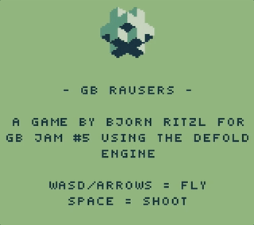This is my entry to GB Jam #5. The game is heavily inspired by the excellent Luftrausers by Vlambeer TRY IT! (improved version) SOURCE
Link and switch
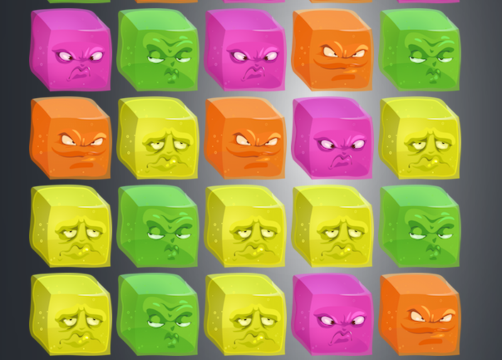This example shows a match three puzzle game using either a linker or switcher mechanic to create sequences of three or more blocks of the same color. There is already an excellent tutorial on how to create a game such as this among the official Defold tutorials but this implementation takes a different approach in that it is built completely using the 2D physics engine in Defold. TRY IT! SOURCE
Lowrez invaders
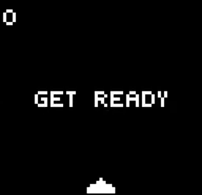This is a simple space invaders clone made for the Lowrezjam 2016. Low rez graphics by me. TRY IT! SOURCE
Shapeshift
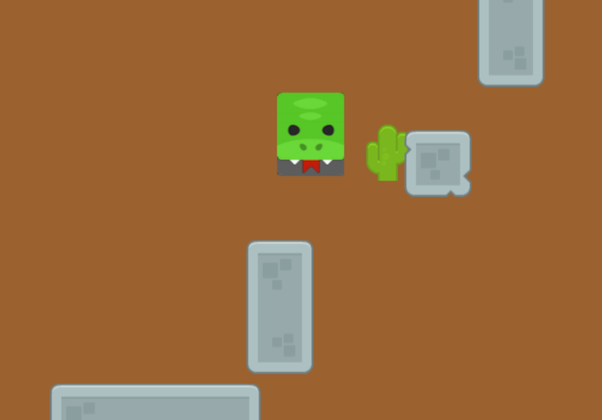This is my entry to the Ludum Dare 35 Jam. The jam had the theme "Shapeshift" and in this game you need to shapeshift between different animals and make use of their abilities to avoid an earthquake. Game design by my two sons Måns and Rasmus. TRY IT! SOURCE
The Cube
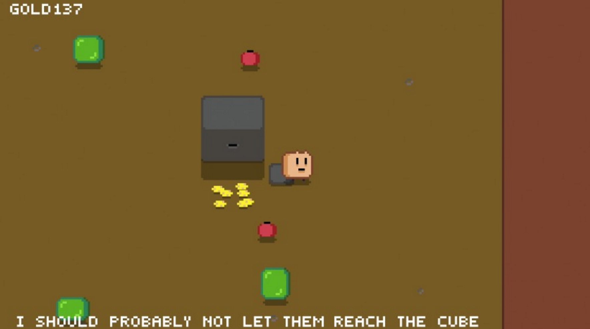This is my entry to the Ludum Dare 36 Competition. The competition had the theme "Ancient Technology". My entry can at most be considered half finished. All graphics created by me. TRY IT! SOURCE
Overrun Room
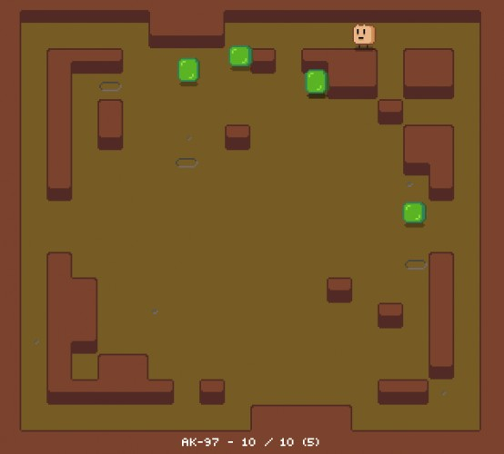This is my Jam entry to the Ludum Dare 37 Competition. The competition had the theme "One Room". My idea was an arena shooter in the vein of Nuclear Throne with a procedurally created room. The inner walls of the room are created using cellular automata and the enemy spawn points are randomly selected. I spent six or seven hours in total so I didn't really have time to do anything else with it. There's a single type of enemy and only two different weapons. All graphics created by me (from my LD 36 entry). TRY IT! SOURCE
Throw-a-crow
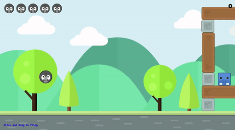This example shows the very basics of a slingshot style physics game in Defold. TRY IT! SOURCE
Ocean Commotion Linker and Clicker
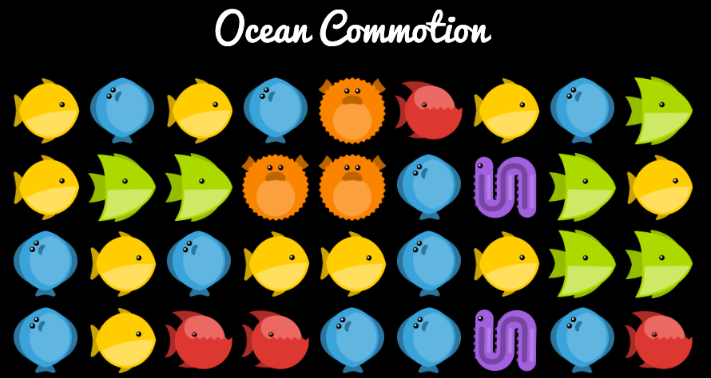Linker and Clicker versions of the Ocean Commotion Match-3 sample game. LINKER - TRY IT! LINKER SOURCE CLICKER - TRY IT! CLICKER SOURCE
Coin magnet
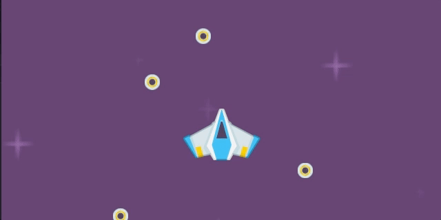This example shows how to create a coin magnet to attract coins or other collectible in-game items. TRY IT! SOURCE
Simple AI
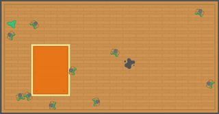This example shows how to create a simple AI that wanders aimlessly until nearby an enemy in which case it will move towards it instead. TRY IT! SOURCE
Swarm AI
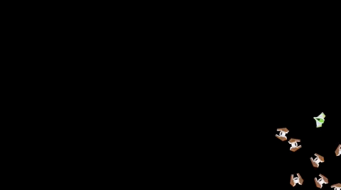This example shows how to create a simple swarm AI that follows a target and avoids other AI agents. TRY IT! SOURCE
One-way platforms
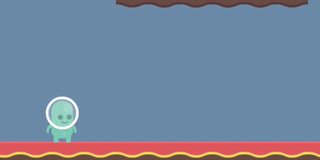This example shows how to implement one-way platforms that are commonly seen in platformer games. TRY IT! SOURCE
Platformer with ladders
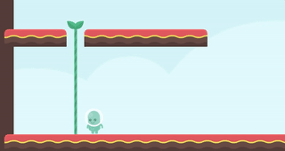This example shows how to implement a platformer game with ladders that the player can climb. TRY IT! SOURCE
Virtual gamepad
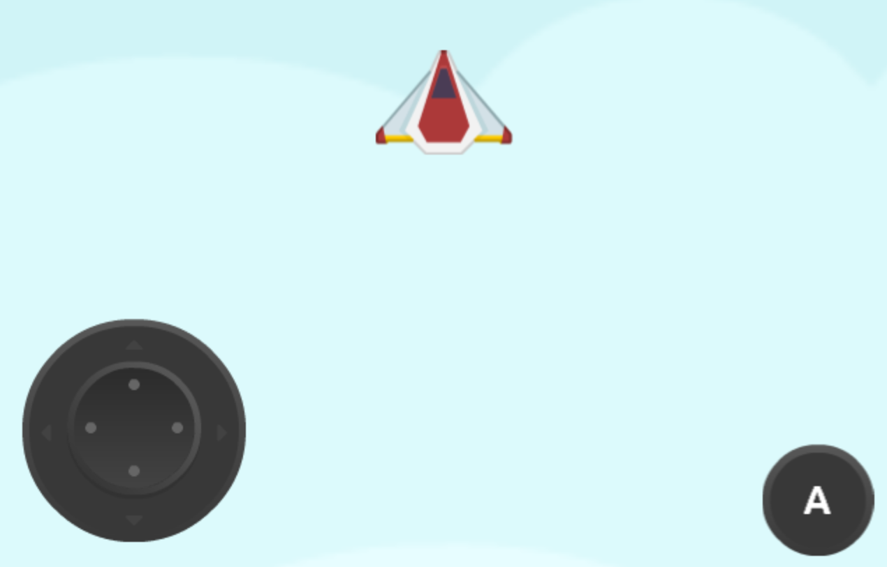This example shows how to create a virtual gamepad to control a player character. TRY IT! SOURCE
Gamepad tester
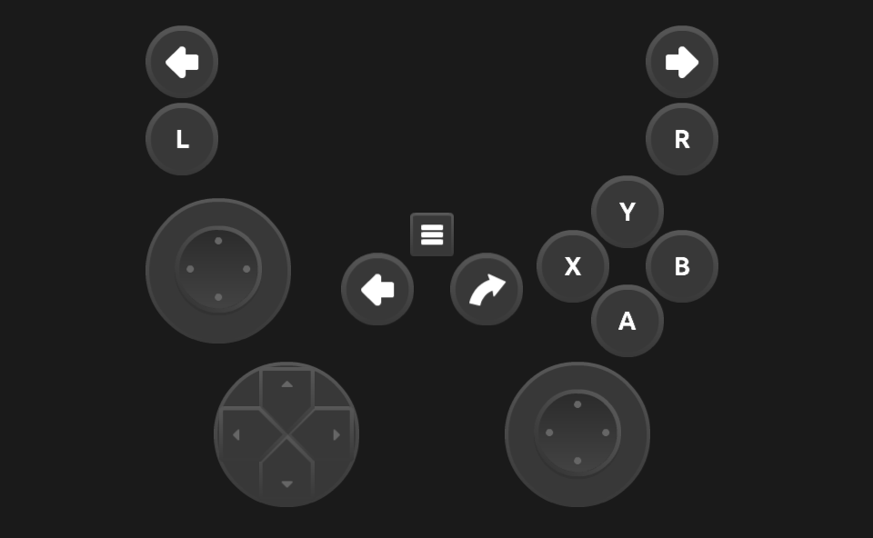This example allows you to test a connected gamepad to easily see if the mappings are correct or not. Windows Linux OSX SOURCE
Click and drag
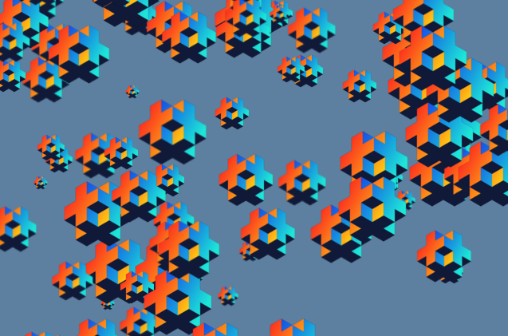This example shows how to click and drag a game object and detect which game object to interact with using collision objects. TRY IT! SOURCE
Drag to scroll
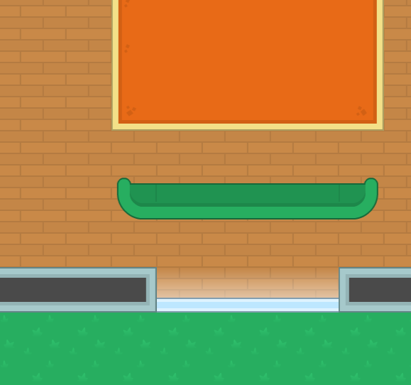This example shows how to move a camera through click and drag. It also shows how to allow for a fling gesture to let the camera continue to move and gradually slow down. TRY IT! SOURCE
Click on game objects
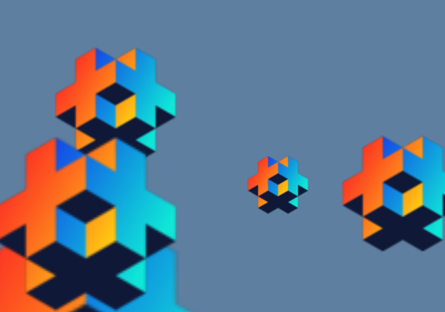This example shows how to do input detection for game objects. The example takes into account sprite scale and offset. TRY IT! SOURCE
Pause game
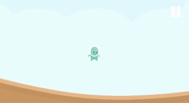This example shows how to pause a game by changing the time_step of a collection proxy. TRY IT! SOURCE
Menu and Game
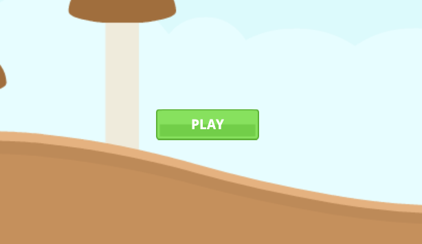This example shows how to switch back and forth between a menu and a game using collection proxies. TRY IT! SOURCE
Level Selector
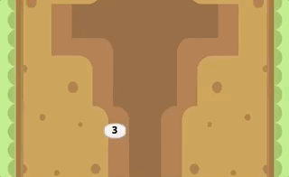This example shows how to create an infinitely scrolling level selector/map using collection proxies. TRY IT! SOURCE
Orthographic Camera API
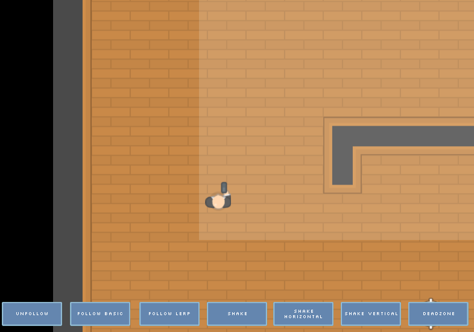This example shows how to use the Orthographic Camera API. TRY IT! SOURCE
Infinite map
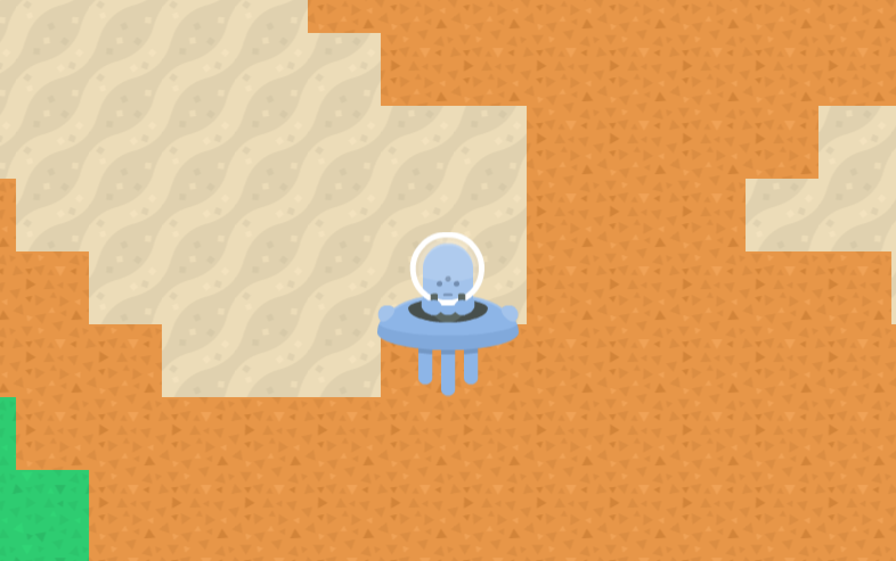This example shows how to create an infinitely scrolling tilemap with perlin noise terrain and enemies. TRY IT! SOURCE
Top down movement
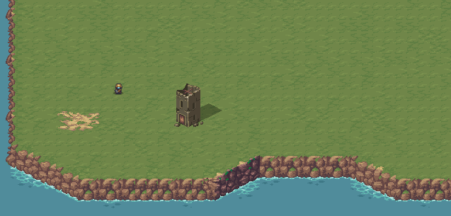This example shows how to move a sprite in eight directions and play an animation based on movement direction as well as how to handle idle animation when no longer moving. TRY IT! SOURCE
Play animation
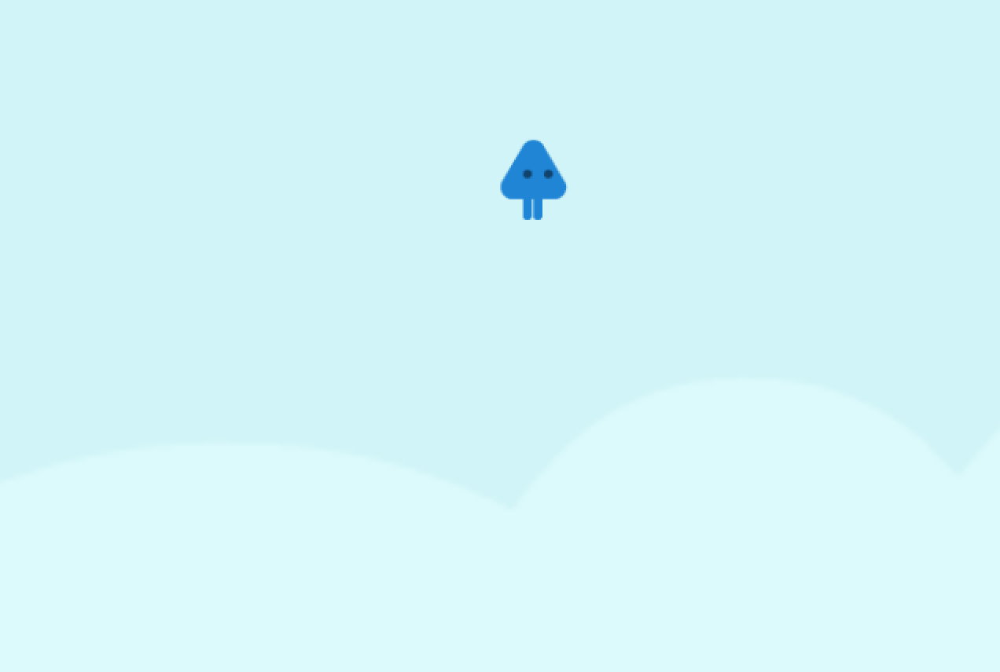This example shows how to use the "play_animation" message to start and stop sprite animations when the player character is moving. TRY IT! SOURCE
Rotate collision object
This example shows how to rotate a dynamic collision object by applying opposing and offset forces. TRY IT! SOURCE
Rotate, move and fire
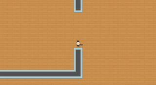This example shows how to rotate a game object, move it in the direction it is facing and firing bullets in the same direction. TRY IT! SOURCE
Fixed rotation
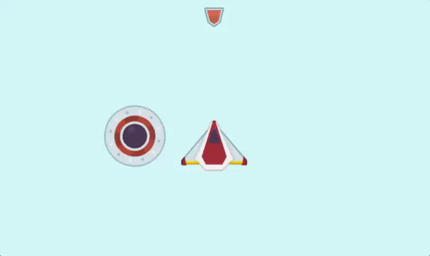This example shows how to let a child game object keep a fixed rotation regardless of how the parent is rotated. TRY IT! SOURCE
Game object movement
This example shows how to animate a game object either using go.animate() or procedurally in update() based on user input. TRY IT! SOURCE
GUI follows GO
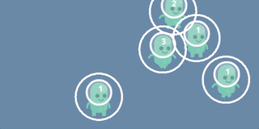This example shows how to make gui nodes follow game objects by setting adjust mode to node and rendering the gui in world space. TRY IT! SOURCE
PlayFab
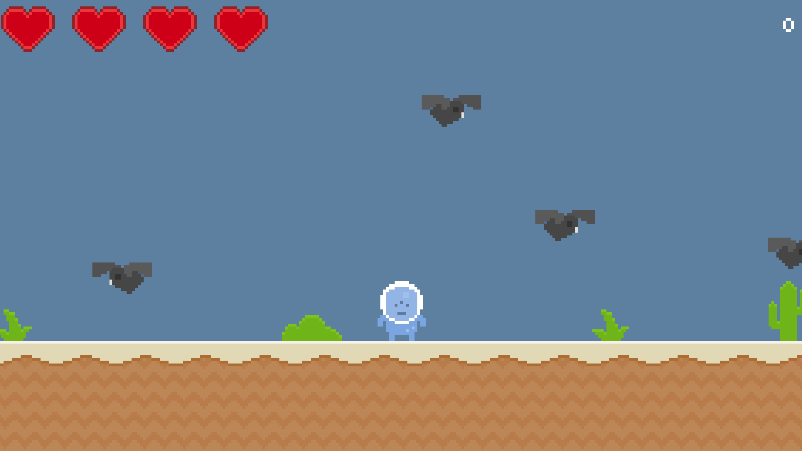This example shows how to use the PlayFab Lua SDK in a Defold game. The example consists of a simple game and a menu system to register and login, store user data and show a leaderboard. SOURCE TRY IT!
DefPro
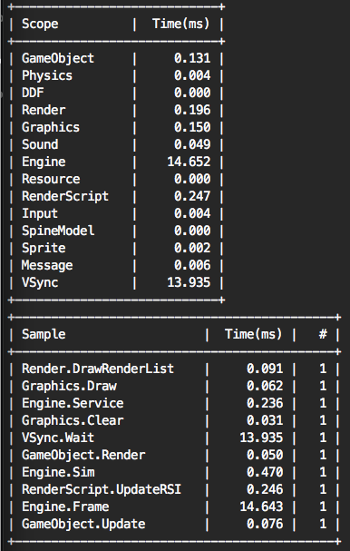This example shows how to get profiler data and manipulate it in Lua. It is possible to grab profiler data from within a running game or from the command line. SOURCE
Localization
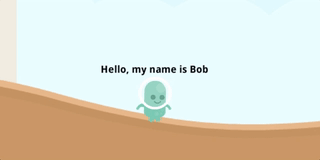This example shows one way to work with game localization. The solution is pretty bare-bones but could easily be expanded to batch translate text nodes or label components. TRY IT! SOURCE
Camera and split-screen
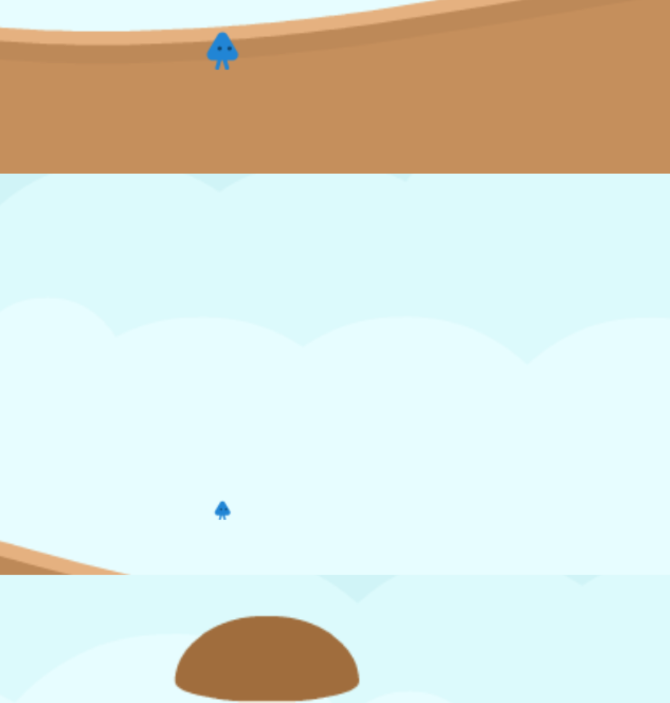This example shows how to replicate the camera component using a game object with a camera script. The example also shows how to use a setup with multiple cameras and render the cameras using a split-screen layout. TRY IT! SOURCE
Factory and properties
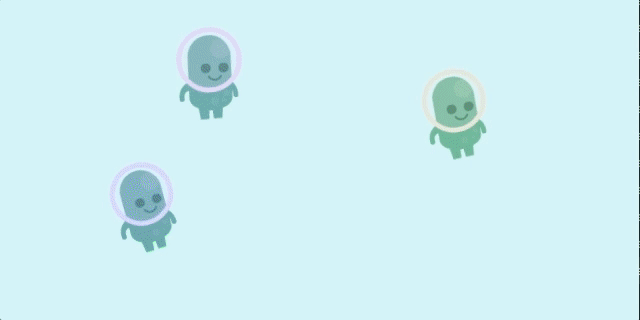This example shows how to pass properties to spawned game objects. It also shows how to use a lookup table to pass things such as strings to spawned game objects. Finally the example also shows how to modify existing values once the game object has been spawned. TRY IT! SOURCE
Dynamic buttons
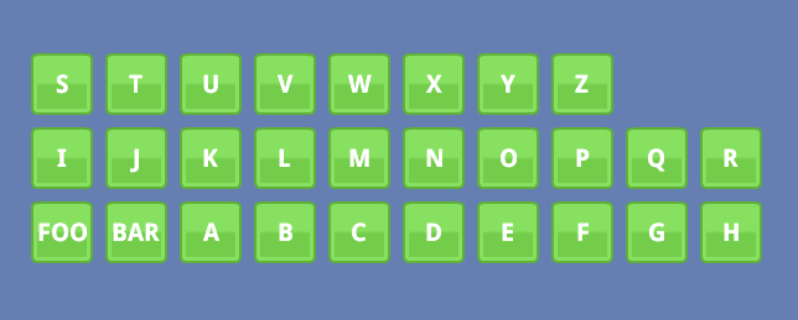This example shows how to dynamically create buttons and associate functions to them. TRY IT! SOURCE
Bullet paths
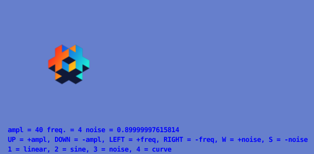This example shows how to move a game object along a path, with an optional movement pattern. TRY IT! SOURCE
Fighter combo
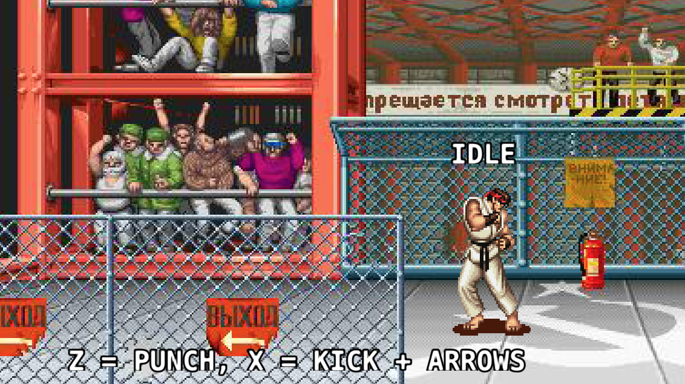This example shows how to do fighter combos in games such as Street Fighter. TRY IT! SOURCE
Sprite tinting
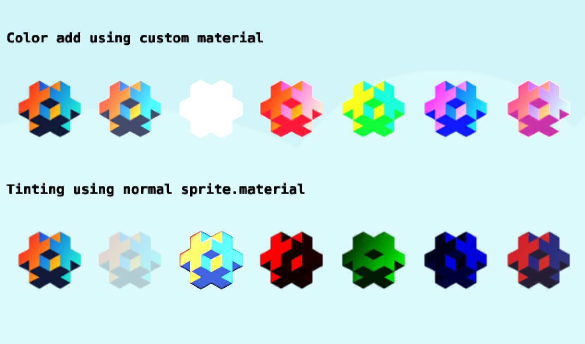This example shows how to tint sprites using the predefined "tint" fragment constant. TRY IT! SOURCE
Page created using the Skeleton boilerplate.